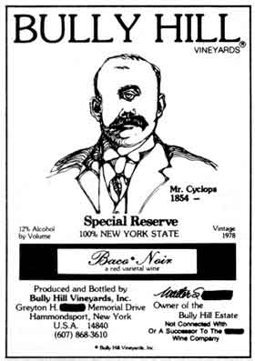

Day after day the paper flood flows into MOTHER'S mailbox: letters . . . copies of court papers . . . newspaper clippings . . . wine labels bearing pictures of masked men . . . plaintive letters claiming the correspondent is "still fighting for honesty & integrity of labeling, name & heritage". As confused comic book characters used to ask Mr. Natural . . . “What's it all mean?"
Well, what it means, in this case, is that Walter S. Tay. . .-oops, almost slipped-Walter S. _______is conducting his media blitz against Coca-Cola and the Taylor Wine Company.
You see, Walter used to work for Taylor-the company was then owned by his family, which gave it its name-until 1970 . . . when he was fired for saying (in public!) that wine labels should actually list the contents of the bottle! Several years later, the Taylor Wine Company was sold to Coca Cola, lock, stock, and good will. Walter, in the meantime, had established a small winery at Bully Hill in the Finger Lakes district of New York . . . the location of the original Taylor winery.
That's when his problems started. It seems Coca Cola figures that the "good will" they paid money for included the Taylor name. Walter, on the other hand, claimed that it was a name he had become attached to over the years, and he should have the right to use it on his wine bottles. Coke-notorious for its zeal in defending its trademarks-sued Walter over the use of the name Taylor, and (you guessed it) Walter lost.
Despite the legal hassles, Walter continued to turn out a quality wine, containing only four of the 71 chemicals the government allows in the beverage (and Walter, names 'em all on the back label!). But, because he was banned by a court order from using his name or pictures of his winemaking ancestors on his product, Walter took to obscuring the family moniker on the bottles, and adorning the containers with pictures of imaginary ancestors . . . like Mr. Cyclops, shown here. Coca Cola didn't like that, either, so the firm took Walter to court again . . . and won again. (The windmills always beat Don Quixote, too.) Well, each time Walter loses in court, another torrent of paper comes screaming off the presses, and MOTHER has another jampacked mailbox. We'll keep you posted on the further adventures of Mr. ________.- PH.
Last year the firm that makes "Mellow Mash" waged a successful campaign to save the Yellowstone, one of this country's last free-flowing rivers, from industrial depletion. This year, it's attempting to search out-and publicize-craftspeople whose lifestyles and work represent the ideals of tradition, self-sufficiency, and adventure.
Is this any way to run an advertising campaign for bourbon? Well, the folks at Glenmore Distilleries seem to think it is! "Corporate funding of environmental projects is a new and, I hope, growing concept," says Don Ray, Glenmore's vice president. "Promotional dollars that might ordinarily be put into less enduring events are now being invested in protecting America's precious resources. As I see it, we have to decide between providing entertainment for a few people and helping to preserve something for generations to come. For us at Glenmore, the choice is obvious."
The company will be sponsoring this year's "America's Heritage: Pass It On" forums-from Texas to Connecticut, and from Colorado to Florida-in the upcoming months. The Glenmore folks, it seems, feel that they can use promotional funds for public benefit, as well as to draw attention to their product. Good for them!- PH.
Paul Winter believes in homegrown music . . . even though he's a professional musician by trade. Winter is fascinated with the art's potential for communication . . . whether that involves playing duets with a timber wolf (the human and animal musicians wound up imitating each other!) or improvising with a group of amateurs and professionals at the gray whale calving off Baja California.
Each year, the Winter Consort returns to the Baja with friends old and new . . . both to watch the whales cavort and to give voice to the feelings that the natural spectacle inspires. Winter says that the stimulation of the wilds, the wolves, and the whales can open people up to the music within themselves . . . that it "pushes your wonder button"! The result of such "enlightenment" is the opening of a collective instinct to song that's not usually felt, and the expression of such music creates a sense of community.
This year, the Winter Consort will make two trips with folks who want to find the music within themselves. The first is the annual whale-watching excursion to Baja, California, which is scheduled for March 8-15. The second will be a raft trip down the Colorado River through the Grand Canyon, to be held from June 23 to July 2. On the latter trip, Winter plans to camp each night in a different resonant space, where the entire group-amateurs and professionals alike -can express the feelings that the grandeur of the canyon stimulates.
If you'd like to consort with the Winter Consort, drop a note to the trip organizers: Baja Expeditions, Dept. TMEN, Box 3725, San Diego, California 92103 (714/297-0506). You can receive the Consort's newsletter, too, by writing to: Living Music, Box 1152, Torrington, Connecticut 06790.- PH.
STEVE MARTIN may be a "wild and crazy guy", but he's making his home in a solar-heated house these days. . . . LOLA REDFORD (see the Plowboy Interview in MOTHER NO. 16) is turning her face to the sun, too. She's involved in an educational program called Women for Solar Energy. . . . SALLY STRUTHERS has a new book out on wholes-tic health and beauty care ( The Sally Struthers Natural Beauty Book, Doubleday, 1979, $12.50). . . . House Agriculture Committee member FRED RICHMOND (Brooklyn, New York) is pushing for an extension of the government's Urban Gardens program.- PH.
|
PHOTO BY BO OVERLOCK ILLUSTRATION COURTESY OF BULLY HILL VINEYARDS |
 |
|